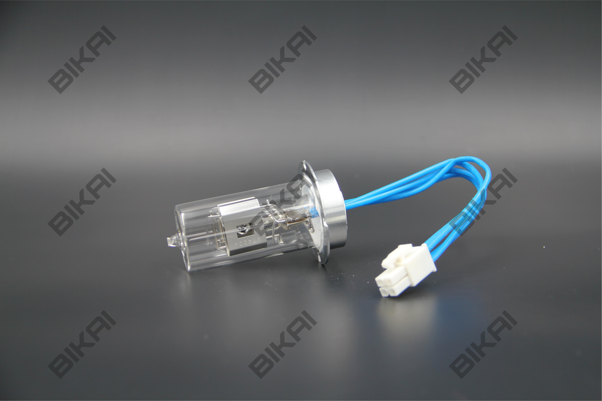

● Расходные материалы
Jasco 970B 975B 5330-0091B
Эквивалентная лампа для JASCO 970B/975B, 1570/1575, 2070/2075
Открыть страницу первоисточника ↗Совместимость и данные детали
| Артикул BIKAI | BK82000091 |
|---|---|
| Модель прибора | 970B/975B, 1570/1575, 2070/2075 |
| Производитель прибора | JASCO |
| Оригинальный номер детали | 5330-0091B |
| Ресурс | 2000 часов |